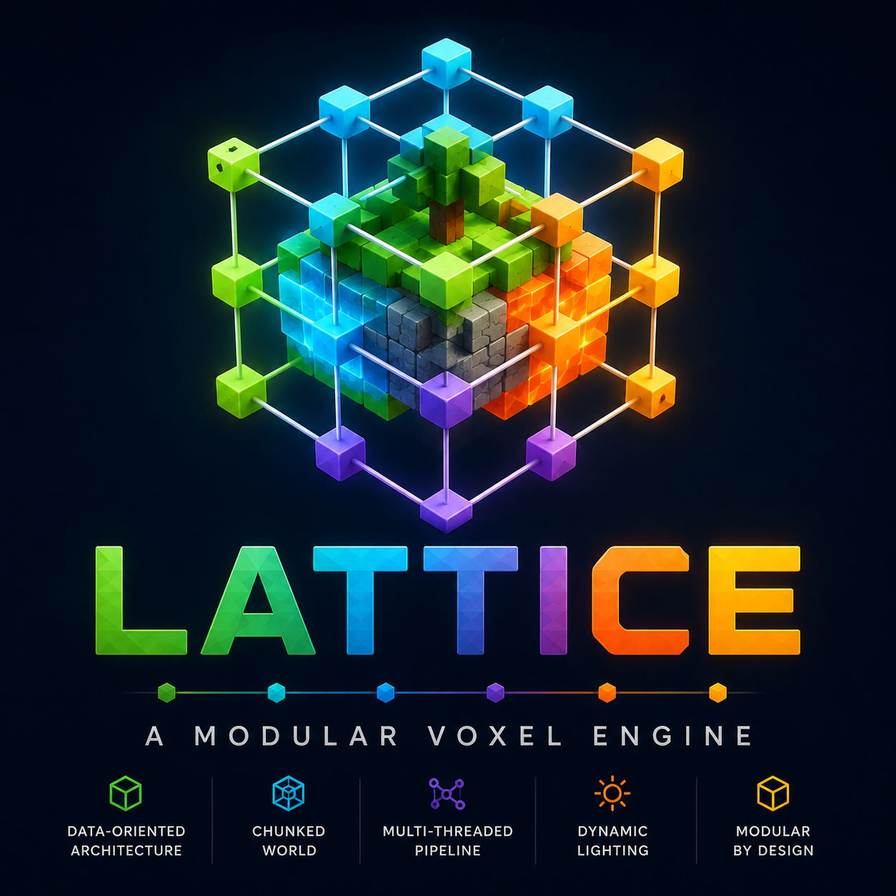

Lattice
A plugin-based C++ game engine for voxel-based games that go well beyond the conventional single-scale Minecraft model — hierarchical multi-layer scale, cascading lazy decomposition, and material-driven simulation, built with an eye toward AI-agent-friendly extension.
API Reference →
Generated from the engine's public headers: the plugin ABI, Engine/renderer interfaces, and each reference plugin's extension API.
Tutorials →
A 14-part series building up from a single voxel on screen to multiplayer, physics, audio, and performance tuning.
Demos →
Working, runnable showcases of the engine's major systems, from cascading decomposition to structural collapse and asteroid gravity.
Plugins →
Reference plugins for world generation, physics response, audio, input, and rendering policy — read as working examples.